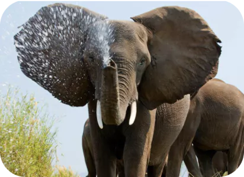

The Global Conservation Network's objectives are,
Protecting the environment: Global Conservation Network aims to
protect the natural environment both on land and in water. They
are committed to maintaining the sustainability of ecosystems,
preserving natural habitats, and reducing negative impacts on the
environment.
Conserving biodiversity: Global Conservation Network seeks to
maintain and restore biodiversity around the world. They work to
protect rare species, restore endangered ecosystems, and promote
sustainable conservation practices.
You can support Global Conservation Network's conservation
programs
in the following ways:
1. Donations: One of the most effective ways to support
conservation programs is by making a financial donation. You can
donate funds directly through the Global Conservation Network
website, either as a one-time donation or a recurring donation.
Your donation will be used to support conservation efforts,
habitat restoration, species protection and other activities.
2. Volunteer: You can volunteer for Global Conservation Network.
They often hold volunteer programs in various locations, such as
tree planting, ecosystem restoration, wildlife surveys, and other
conservation-related activities.
3. Spreading Awareness: Help spread awareness about conservation
and preservation issues by sharing information and participating
in social media campaigns organized by the Global Conservation
Network. By spreading important information about nature
protection, you can educate others and inspire positive action.